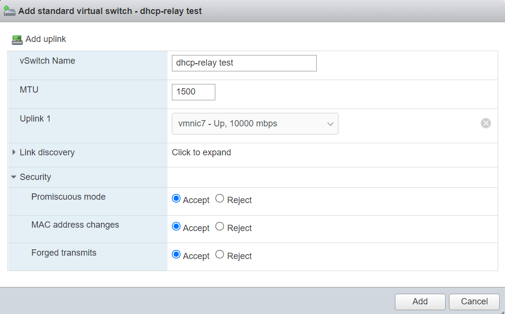
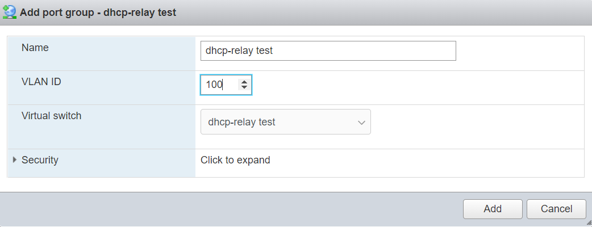
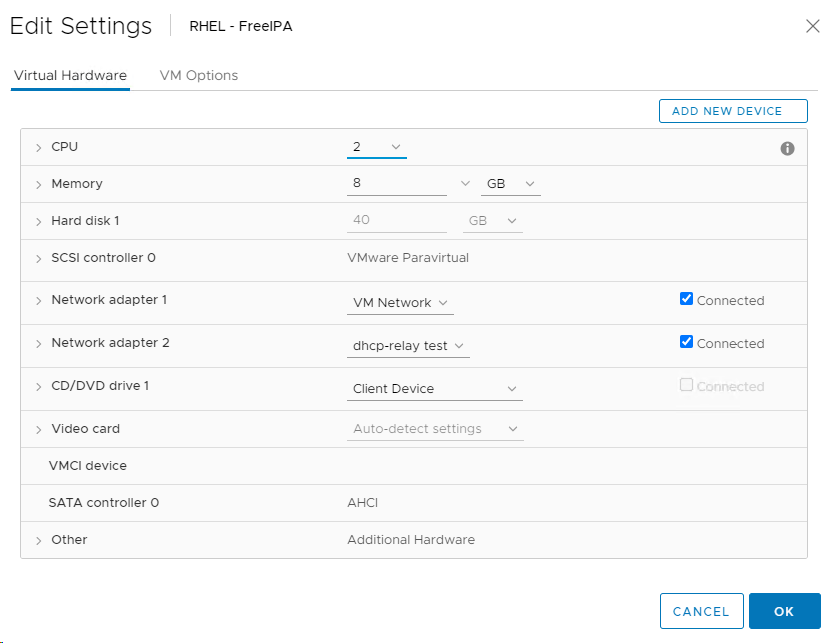
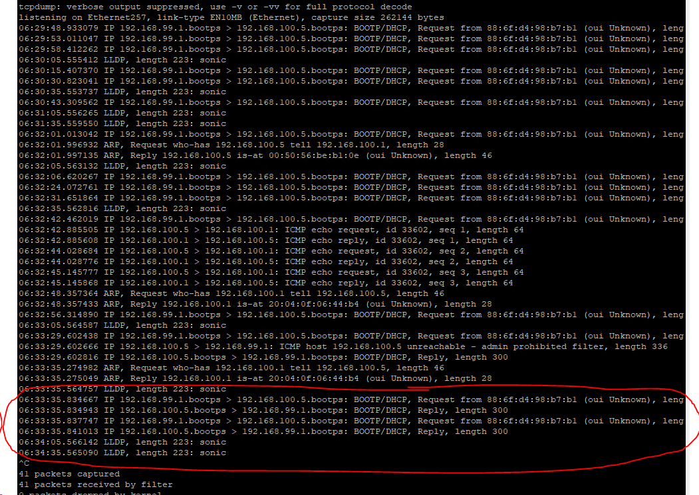

DHCP Relay on SONiC
- Configuring a Cross VLAN DHCP Relay on SONiC OS
- My Configuration
- Configuration of Devices
- Running the Test
My Configuration
Dell 4112F-ON running OS 10 (interface eth1/1/13 to interface ethernet 0 [all VLAN 99])
|
Dell Z9264 running SONiC OS (interface ethernet 257 to interface vmnic7 [all vlan 100])
|
Dell R840 running ESXi (virtual switch with portgroup on vlan 100 going to VM's virtual NIC)
|
RHEL Virtual Machine with DHCP server
IP Addresses
- RHEL VM: 192.168.100.5/24
- Z9264 SVI interface on VLAN 99: 192.168.99.1/24
- Z9264 SVI interface on VLAN 100: 192.168.100.1/24
- 4112F-ON SVI interface on VLAN 99 - DHCP
Test Concept
DHCP request will go from SVI interface on 4112F-ON residing on VLAN 99 through the Z9264, to ESXi, and onto the DHCP server running on the RHEL virtual machine on VLAN 100 running dhcpd.
4112F-ON OS 10 Version
Dell EMC Networking OS10 Enterprise
Copyright (c) 1999-2020 by Dell Inc. All Rights Reserved.
OS Version: 10.5.1.3
Build Version: 10.5.1.3.190
Build Time: 2020-06-19T21:48:07+0000
System Type: S4112F-ON
Architecture: x86_64
Up Time: 1 day 01:29:03
Z9264 SONiC Version
Software Version : '3.4.0-Enterprise_Base'
Product : Enterprise SONiC Distribution by Dell Technologies
Distribution : '9.13'
Kernel : '4.9.0-11-2-amd64'
Config DB Version : version_3_3_1
Build Commit : 'e2f258af7'
Build Date : Wed Jul 28 23:54:33 UTC 2021
Built By : sonicbld@sonic-lvn-csg-005
Platform : x86_64-dellemc_z9264f_c3538-r0
HwSKU : DellEMC-Z9264f-C64
ASIC : broadcom
Hardware Version : A00
Serial Number : TW0XXP63DNT008970001
Uptime : 04:53:36 up 2:05, 1 user, load average: 1.04, 0.94, 0.95
Mfg : Dell EMC
RHEL Version
[root@freeipa ~]# cat /etc/*-release
NAME="Red Hat Enterprise Linux"
VERSION="8.2 (Ootpa)"
ID="rhel"
ID_LIKE="fedora"
VERSION_ID="8.2"
PLATFORM_ID="platform:el8"
PRETTY_NAME="Red Hat Enterprise Linux 8.2 (Ootpa)"
ANSI_COLOR="0;31"
CPE_NAME="cpe:/o:redhat:enterprise_linux:8.2:GA"
HOME_URL="https://www.redhat.com/"
BUG_REPORT_URL="https://bugzilla.redhat.com/"
REDHAT_BUGZILLA_PRODUCT="Red Hat Enterprise Linux 8"
REDHAT_BUGZILLA_PRODUCT_VERSION=8.2
REDHAT_SUPPORT_PRODUCT="Red Hat Enterprise Linux"
REDHAT_SUPPORT_PRODUCT_VERSION="8.2"
Red Hat Enterprise Linux release 8.2 (Ootpa)
Red Hat Enterprise Linux release 8.2 (Ootpa)
Configuration of Devices
Configuration of RHEL DHCP Server
See: Configuring RHEL DHCP Server
sudo dnf install -y dhcp-server
ip route add 192.168.99.0/24 via 192.168.100.1 dev ens224
vim /etc/dhcp/dhcpd.conf
I used configuration:
#
# DHCP Server Configuration file.
# see /usr/share/doc/dhcp-server/dhcpd.conf.example
# see dhcpd.conf(5) man page
#
option domain-name "lan";
default-lease-time 86400;
authoritative;
shared-network lan {
subnet 192.168.99.0 netmask 255.255.255.0 {
range 192.168.99.100 192.168.99.200;
option routers 192.168.99.1;
}
}
subnet 192.168.100.0 netmask 255.255.255.0 {}
OS10 on 4112F-ON
configure terminal
interface ethernet 1/1/13
switchport mode trunk
switchport trunk allowed vlan 99
exit
interface vlan 99
ip address dhcp
SONiC OS on Z9264
sonic-cli
configure terminal
interface ethernet 0
no shutdown
fec rs
speed 100000
switchport trunk allowed Vlan 99
exit
interface ethernet 257
no shutdown
switchport trunk allowed Vlan 100
exit
interface Vlan 99
ip address 192.168.99.1/24
ip dhcp-relay 192.168.100.5
exit
interface Vlan 100
ip address 192.168.100.1/24
exit
NOTE: I had to manually configure FEC on the 100Gb/s interface to bring it up.
Helpful Commands
show interface transceiver
NOTE: Unlike OS10 all interfaces start in shutdown mode so you will need to bring them up.
Configuration on ESXi
  
Running the Test
Lease Record on RHEL
[root@freeipa ~]# cat /var/lib/dhcpd/dhcpd.leases
# The format of this file is documented in the dhcpd.leases(5) manual page.
# This lease file was written by isc-dhcp-4.3.6
# authoring-byte-order entry is generated, DO NOT DELETE
authoring-byte-order little-endian;
server-duid "\000\001\000\001)A@\255\000PV\276\261\016";
lease 192.168.99.100 {
starts 1 2021/12/06 21:50:25;
ends 2 2021/12/07 21:50:25;
cltt 1 2021/12/06 21:50:25;
binding state active;
next binding state free;
rewind binding state free;
hardware ethernet 88:6f:d4:98:b7:b1;
option agent.circuit-id "Vlan99";
option agent.remote-id "20:04:0f:06:44:b4";
client-hostname "OS10";
}
tcpdump from SONiC
Shows DHCP transiting the relay.

Address Info From OS10
OS10(conf-if-vl-99)# do show ip interface brief
Interface Name IP-Address OK Method Status Protocol
=========================================================================================
Ethernet 1/1/1 unassigned NO unset up down
Ethernet 1/1/2 unassigned NO unset up down
Ethernet 1/1/3 unassigned NO unset up down
Ethernet 1/1/4 unassigned NO unset up down
Ethernet 1/1/5 unassigned NO unset up down
Ethernet 1/1/6 unassigned NO unset up down
Ethernet 1/1/7 unassigned NO unset up down
Ethernet 1/1/8 unassigned NO unset up down
Ethernet 1/1/9 unassigned NO unset up down
Ethernet 1/1/10 unassigned NO unset up down
Ethernet 1/1/11 unassigned NO unset up down
Ethernet 1/1/12 unassigned NO unset up down
Ethernet 1/1/13 unassigned YES unset up up
Ethernet 1/1/14 unassigned NO unset up down
Ethernet 1/1/15 unassigned NO unset up down
Management 1/1/1 192.168.1.24/24 YES manual up up
Vlan 1 unassigned NO unset up down
Vlan 99 192.168.99.100/24 YES DHCP up up